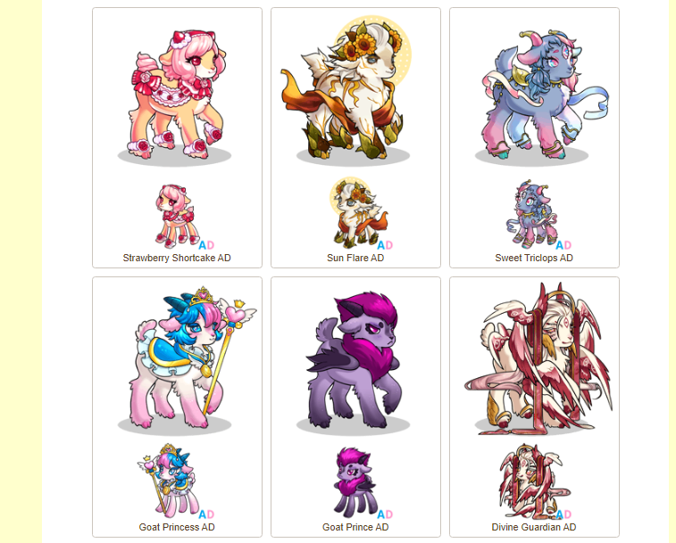

Goatlings.com

Goatlings.com is a virtual pet-site run by Christine Mohr. On this website, you collect, raise, and dress your own "goatlings" as well as trade, battle, and interact with other players. I've had the pleasure of getting to work with them on multiple projects to improve the site, a few of which are included here.
The website is much like Neopets in construction, with several unique skins to obtain for your virtual pet, and a focus on user-user interactivity with over 100,000 users. The website also promotes an extremely strong community, with a heavy amount of on-site content being created by players before being officially rendered. As lead programmer for the website, I have listened actively to this userbase when implementing changes.
Leveling System
The first job that was asked of me was an overhaul of the site's leveling system. For Goatlings, levels ranged from 1-100, with experience being gained through battle. However, upon examination of the current system in place, the problem was readily visible. Under the original format, to raise a Goatling from 1-100 would take about 10 years of optimized play.
Understanding the issue, I spoke with the site owner about possible solutions. This was to be implemented in a dynamic exp-curve rather than a static requirement to level up, which greatly changed the exp requirements to each level. This meant that Goatlings who had already earned several levels higher worth of experience needed to be updated, as well as the appropriate stat increases. This led to the careful construction of larger SQL statements that would update Goatlings by the ranges of experience earned, as well as adjusting several stats. Goatlings.com currently has 359,000 individual Goatlings.
Item Sorter
Skibidi